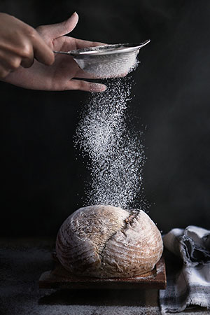
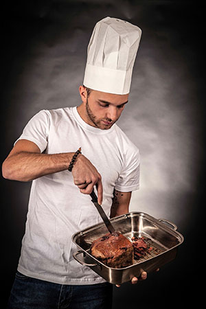

Káva
Kávovník je ovocný strom, jehož plodem jsou peckovice. Kávová zrna jsou tedy vlastně pecky kávových třešní. Samotný plod je jedlý a sušený se v některých zemích používá k výrobě čaje zvaného cascara.
VíceNaše PrimaKavárna je originální a příjemné místo inspirované prostředím francouzských kaváren. V nabídce najdete prvotřídní vína z Francie, Itálie i Čech. Především pro pány máma čepované tradiční české pivo Únětice a řadu lahodných lehkých jídel. Nechybí skvělá káva a dobré čaje, a tak si každý přijde na své. Návštěvou naší kavárny potěšíte nejen své chuťové buňky, ale také potrápíte mozkové závity při hraní deskových her, které si můžete vypůjčit :).
Zajděte si k nám v pondělí dopoledne pro cappuccino s sebou a získáte pro Vaše hezčí pondělí druhé cappuccino ZDARMA! Děláme vše pro vaše hezké pondělky!
Už víte, že máme tu nejlepší kávu, skvělé zákusky, lahodné dezerty a úžasný tým, který Vám splní vše co si budete přát. Aby jste k nám chodili s ještě větší láskou stačí si na baru zažádat o naší věrnostní kartičku. Věřte, že nebudete litovat :)


Také milujete čerstvé měkké pečivo a voňavý chléb s křupavou kůrčičkou a nestojíte o davy lidí v supermarketu? Vynikající chléb, rohlíky a housky pro vás připravujeme každý den.
Využíváme naší osvědčenou recepturu, kterou naši pekaři vypiplali k naprosté dokonalosti. Těšíte se na ten nejlepší chléb?